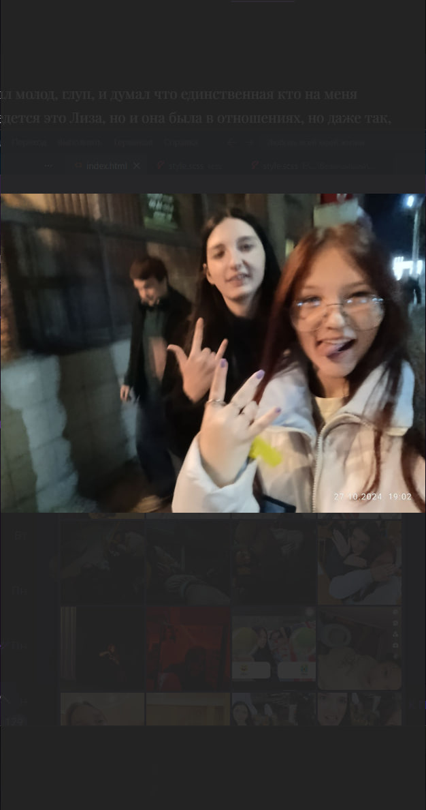

То с чего все началось, 2024
Я был молод, глуп, и думал что единственная кто на меня поведется это Лиза, но и она была в отношениях, но даже так, между нами промелькнула та самая искорка. 13 октября 2024 года. 2 девушки пригласили меня в дс, где в один момент она заметила что я слушаю музыку и попросиола включить демку, я включил и после этого я незаметно начал показывать что наш вкус музыку схож и то что на самом деле я много что знаю о ее вкусе. Именно это по ее словам зацепило ее, просто музыка кто-то скажет, но для нас это был первый интерес у обоих
